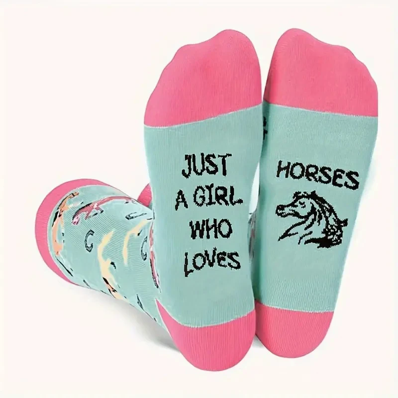
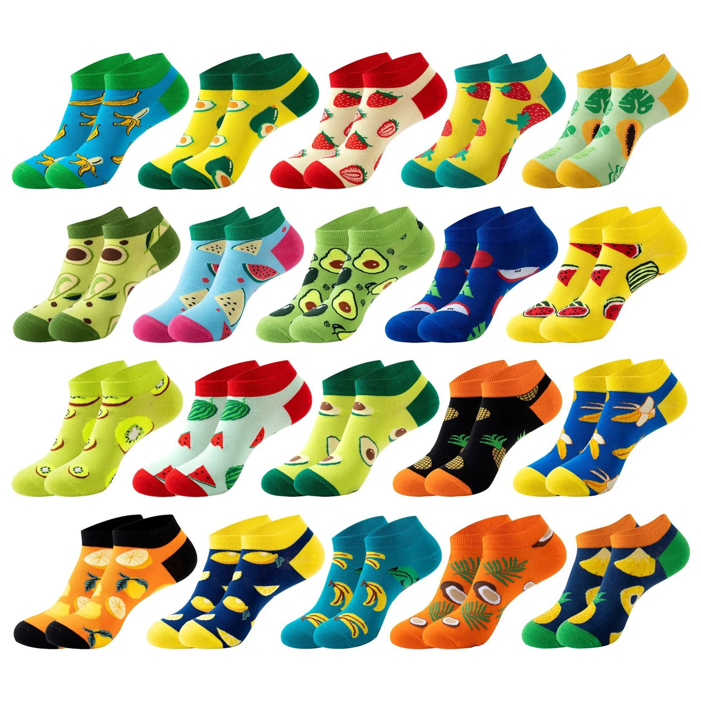

CASE STUDIES / PROJECT INSPIRATIONDifferent projects.
One thoughtful start.
A team collection. A retail launch. A gift with your name on it. Explore ways to turn a sock idea into a well-planned collection.
DESIGN · FIT · BRANDING · PRESENTATION 
Made for your next idea.GOODSTARTSOCKS / CUSTOM COLLECTIONS
See the possibilities.
Plan the details.
These are illustrative project briefs, rather than verified customer results. Use them to explore a direction; your final materials, specifications and pricing are agreed around your own project.
 01 / TEAM COLLECTIONS
01 / TEAM COLLECTIONSSports Team Socks
A coordinated look for the whole squad.
Build a training collection around club colors, a readable crest and a comfortable cuff.
Crew profile · Contrast stripes · Team crest
Project planning notes +
Separate youth and adult sizes; label packs by size for easy distribution.
Discuss this project ↗02 / BRANDED GIFTS
Corporate Gift Socks
A gift people can use every day.
Pair an expressive everyday sock with a personal message and a considered presentation.
Themed design · Knitted message · Gift wrap
Project planning notes +
Plan the unboxing first: a single pair for a welcome kit or a set for a seasonal gift.
Discuss this project ↗
03 / PRIVATE LABELRetail Brand Socks
A collection built for your shelf.
Develop a small, cohesive assortment with a recognizable palette and consistent label design.
Coordinated colors · Care labels · Retail tags
Project planning notes +
Map each design and size to a SKU before approving packaging artwork.
Discuss this project ↗ 04 / SCHOOL COLLECTIONS
04 / SCHOOL COLLECTIONSSchool Socks
School identity, down to the details.
Translate school colors into a practical uniform or club sock with an easy-to-recognize motif.
School palette · Size assortment · Durable blend
Project planning notes +
Review a sample with the intended footwear and organize packs for distribution.
Discuss this project ↗ 05 / EVENT MERCHANDISE
05 / EVENT MERCHANDISEEvent Promotional Socks
An event keepsake with personality.
Make a playful design around the event identity, with a bold motif that works at sock scale.
Statement pattern · Clear branding · Simple packs
Project planning notes +
Work backward from the event date and include time for sample approval and transit.
Discuss this project ↗ 06 / SEASONAL GIFTING
06 / SEASONAL GIFTINGChristmas Socks
A little festive character.
Create a holiday collection that combines a seasonal illustration with your brand palette.
Festive motif · Contrast cuff · Gift presentation
Project planning notes +
Confirm the seasonal artwork and packaging together before production begins.
Discuss this project ↗ 07 / STUDIO COLLECTIONS
07 / STUDIO COLLECTIONSGrip Socks
Designed around your studio.
Coordinate a studio sock with a distinctive cuff and a grip pattern suited to the intended use.
Grip layout · Studio logo · Fit review
Project planning notes +
Evaluate the physical sample for fit and grip performance with your intended activity.
Discuss this project ↗ 08 / SUPPORT SOCK COLLECTIONS
08 / SUPPORT SOCK COLLECTIONSCompression Socks
Start with a clear fit brief.
Plan a longer sock with carefully defined sizing and stretch requirements for your audience.
Long profile · Stretch structure · Size labels
Project planning notes +
Specify any compression requirements separately and agree on testing before making performance claims.
Discuss this project ↗BEFORE THE FIRST SAMPLEGood projects start
with a clear brief.
Bring your idea and the essentials below. We can then discuss the design decisions that shape your collection.
Explore Customization ↗ 01Your design direction
Send your artwork, brand palette and references, plus where you would like your branding to appear.
Your wearers
Describe the intended use, preferred feel and shoe-size range for your audience.
Your order plan
Include pairs per design and size, your packaging direction and the destination for the shipment.
Your timeline
Share the date you need the socks in hand, so sample review, production and delivery can be considered together.
USEFUL TO KNOW
Before you begin.
Are these completed customer projects?
These are project examples to help you choose a direction. They do not represent named clients, confirmed order volumes or measured results.
Can I combine ideas from different projects?
Yes. For example, a studio launch can combine grip socks with retail packaging. Tell us which details matter most to your collection.
What if my design is still at the idea stage?
Send a mood board, reference image or logo alongside your intended audience and quantity. We can use that as the starting point for a specification discussion.
How do I approve the final design?
Review the agreed specifications and physical sample before bulk production. Check fit, artwork, colors and packaging together.
Let’s make your
idea wearable.
Share a little about your project. We’ll help work through the details.
Start Your Project ↗